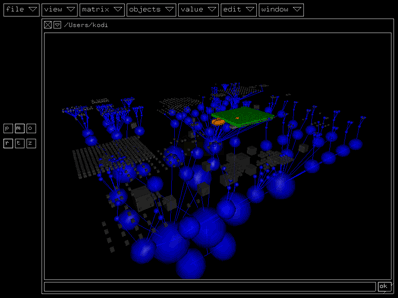
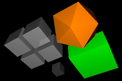
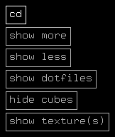

| |

When you open or save a kodisein project or a texture set, there
will appear a window with some strange objects in it. This is
kodisein's file browser.
Files & Directories
Every blue sphere you see, is a directory. The biggest sphere at the
base is the current directory (.). The coupled spheres below
it represent the parent directory (..). You change to a directory
by simply double clicking it.
All the other objects are files. Most of them are just little gray
cubes because they are of no interest for you while working with kodisein.

There are currently 3 file types (recognized by their suffix) that
are used by kodisein and therefore displayed as bigger and colorful
objects:
- project files (*.kds, orange)
- texture sets (*.kts, light gray)
- texture files (*.tga, *.tif, *.jpg, *.png,
*.bmp, *.pcx, ... green)
If you click a file, its name will be displayed in the file
selection field below the tree structure and to the left of
the 'ok' button.
File Selection Field
If the graphical view of the filbrowser get's to slow or doesn't
work the way you expect, you should maybe use the file selection
field, which tries to simulate the behaviour of a normal shell.
The following table lists some special keys and their function
while using the file selection field:
The Filebrowsers Popup Menu
If you press  while clicking in the filebrowser, there will appear a popup menu:
while clicking in the filebrowser, there will appear a popup menu:

cd
Change to the currently selected directory. Useful, if the
framerate is to low to detect double clicks.
show more
Show one more level of the directory hierarchy. Be careful
with this option, too many levels may drastically decreasy the
framrate.
show less
Oposite of the above.
show dotfiles
(De)activate the display of files whose first letter is a dot.
hide cubes
(De)activate the display of the little gray cubes = 'uninteresting'
files.
show texture(s)
Display the texture of the currently selected texture file
or of all texture files in the currently selected directory.
>>> This is the last page of the general
concepts section of the manual.
Please consult the tutorials or the
reference section for more information.

|